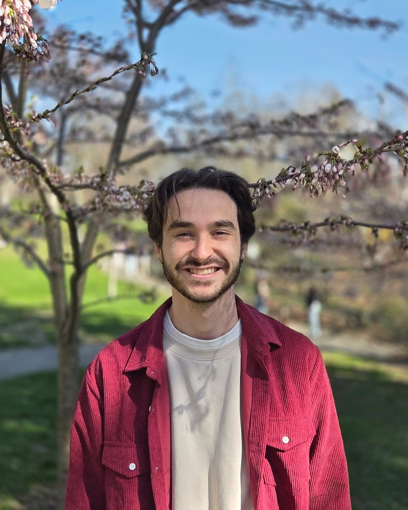

PhD Candidate
Department of Mathematics
University of Toronto
james.bonalandry@mail.utoronto.ca
Since September 2025, I have been a doctoral student in the Department of Mathematics at the University of Toronto, working under the supervision of Prof. Jeremy Quastel. Previously, I completed my undergraduate and master's studies at the same institution, graduating in June 2024 and November 2025, respectively.
I am interested in randomness - specifically, growth models and the universal statistics that describe them at the macroscopic scale. As of late, I have also developed a growing interest in the mathematical underpinnings of deep learning.
A live simulation of ballistic deposition — a simple (but unsolved) growth model in the KPZ universality class, a diverse family of random systems that, despite vastly different microscopic rules, share the exact same (non-Gaussian) macroscopic statistics.
Utilizing algebraic machinery to obtain exact formulas describing random systems
Understanding the shared statistical properties underlying a wide range of random growth models
Stochastic partial differential equations and their applications
Mathematically describing how and why modern AI architectures capture complex structures and generalize